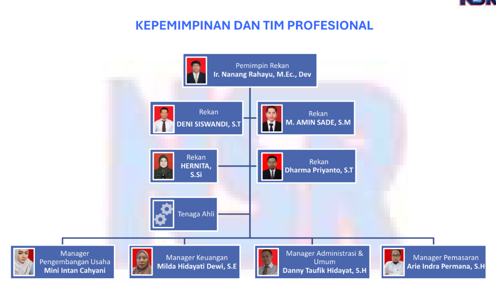

KANTOR JASA PENILAI PUBLIK
NANANG RAHAYU SIGIT PARYANTO & REKAN
Izin Usaha Menteri Keuangan RI No. 2.19.0160 • KMK No. 248/KM.1/2019 • IKJPP No. 19070160
Kantor Pusat Jakarta
Jl. Hankam No. 5, Ragunan, Pasar Minggu, Jakarta Selatan 12550
Telepon: (021) 7884-9996 • Email: kjppnr.danny@gmail.com
Website: www.kjppnanangrahayu.com
1. Identitas Badan Usaha & Ringkasan Eksekutif
Kantor Jasa Penilai Publik Nanang Rahayu Sigit Paryanto & Rekan (KJPP NSR) adalah badan usaha persekutuan perdata penilai publik yang beroperasi secara sah berdasarkan Izin Usaha Menteri Keuangan Republik Indonesia Nomor 2.19.0160 (Keputusan Menteri Keuangan No. 248/KM.1/2019). Didirikan sebagai kelanjutan dari praktik profesional KJPP Nanang Rahayu (berdiri sejak 2009), KJPP NSR telah berkembang menjadi salah satu kantor jasa penilai publik terkemuka dengan jaringan layanan di 5 kota strategis nasional.
2. Legalitas, Registrasi & Lisensi Profesi
Pembinaan & Pengawasan oleh PPPK Kemenkeu RI. Pemegang Izin Usaha Kantor Pusat No. 2.19.0160 dan 4 Izin Resmi Pembukaan Kantor Cabang.
Didukung oleh Penilai Publik pemegang Surat Tanda Terdaftar (STTD) OJK aktif untuk sektor Pasar Modal (PMDK) dan Perbankan/IKNB.
Didukung Penilai Publik berlisensi resmi Penilai Pertanahan dari Kementerian ATR/BPN untuk pengadaan tanah bagi kepentingan umum.
3. Ruang Lingkup Layanan Penilaian (Sesuai Standar SPI & KEPI)
• Penilaian Properti Komersial & Residensial
Penilaian gedung perkantoran, pusat perbelanjaan (mall), hotel, apartemen, rumah sakit, pergudangan, perumahan tapak, dan kawasan industri untuk transaksi, laporan keuangan (PSAK 16), dan aksi korporasi.
• Penilaian Agunan Fasilitas Kredit Perbankan
Penilaian independen jaminan kredit komersial, UKM, dan korporasi sesuai ketentuan prudensial perbankan OJK dan Standar Penilaian Indonesia (SPI 102), mencakup estimasi Nilai Pasar dan Nilai Likuidasi.
• Pengadaan Tanah Bagi Kepentingan Umum (SPI 204)
Penilaian besaran ganti kerugian fisik (lahan, bangunan, tanaman, sarana) dan non-fisik (solatium, alih profesi, masa tunggu) untuk proyek jalan tol, transmisi listrik PLN, bendungan, dan infrastruktur strategis nasional merujuk UU No. 2/2012 jo. PP No. 19/2021.
• Penilaian Mesin, Peralatan & Utilitas Pabrik
Pendekatan penilaian ditentukan berdasarkan karakteristik objek, tujuan, dan data pasar. Dalam hal digunakan Pendekatan Biaya, nilai diestimasi dari Biaya Reproduksi/Pengganti Baru disesuaikan dengan penyusutan fisik, keusangan teknis, dan keusangan ekonomis.
• Studi Kelayakan Proyek & Analisis HBU
Kajian kelayakan investasi bisnis real estat (Feasibility Study), analisis penggunaan tertinggi dan terbaik (Highest and Best Use / HBU), advisory perizinan investasi, dan optimalisasi aset *under-utilized*.
• Pengawasan Proyek & Konsultansi Aset
Monitoring penarikan pembiayaan konstruksi perbankan (Project Monitoring), penaksiran sisa umur ekonomis gedung/instalasi, dan inventarisasi sistem informasi manajemen aset (SIM Aset BUMN/BUMD).
4. Kepemimpinan & Tim Profesional
KJPP NSR dipimpin oleh 5 Rekan Penilai Publik pemegang izin resmi Menteri Keuangan RI, jajaran manajemen operasional, serta didukung lebih dari 20+ Penilai Properti Beregister dan tenaga ahli multi-disiplin ilmu:

5 Rekan Penilai Publik Berizin Kementerian Keuangan RI (Pusat Jakarta, Bandung, Padang, Makassar, Palembang)

Bagan Struktur Organisasi & Pengendalian Mutu Laporan Terpusat
| Nama & Gelar | Jabatan & Kantor | Izin Kemenkeu | No. MAPPI (Cert.) | STTD OJK | Lisensi BPN |
|---|---|---|---|---|---|
| Ir. Nanang Rahayu, M.Ec.Dev., MAPPI (Cert.) S2 M.Ec.Dev. UGM • Pengalaman 31+ Thn | Pemimpin Rekan (Pusat Jakarta) | P1.09.00218 | 95-S-00594 (Cert.) | KEP-859/KS.13/2026 | PP1.0006.25 |
| Deni Siswandi, S.T., MAPPI (Cert.) S1 Teknik Sipil • Pengalaman 20+ Thn | Pimpinan Cabang Bandung | P1.20.00581 | 06-S-02013 (Cert.) | KEP-1261/KS.13/2026 | PP1.0041.24 |
| Hernita, S.Si., MAPPI (Cert.) S1 Sains • Pengalaman 17+ Thn | Pimpinan Cabang Padang | PS1.15.00046 | 09-S-02262 (Cert.) | KEP-1012/KS.13/2026 | - |
| Muhammad Amin Sade, S.M., MAPPI (Cert.) S1 Manajemen • Pengalaman 17+ Thn | Pimpinan Cabang Makassar | PS1.16.00126 | 09-S-02425 (Cert.) | KEP-1278/KS.13/2026 | - |
| Dharma Priyanto S.B.S., S.T., MAPPI (Cert.) S1 Teknik Arsitektur • Pengalaman 10+ Thn | Pimpinan Cabang Palembang | PS1.19.00249 | 16-S-06894 (Cert.) | KEP-523/KS.13/2026 | PP2.0031.23 |
5. Jaringan Kantor Operasional (Pusat & 4 Kantor Cabang)
Jl. Hankam No. 5 RT.006 RW.001, Kel. Ragunan, Kec. Pasar Minggu, Jakarta Selatan, DKI Jakarta 12550
Telepon: (021) 7884-9996 • PIC: Ir. Nanang Rahayu, M.Ec.Dev., MAPPI (Cert.)
Perumahan Pancanaka Royal Garden II, Jl. Pangrango II No. 1A, Citeureup, Cimahi Utara, Kota Cimahi 40512
Telepon: (022) 6622088 • PIC: Deni Siswandi, S.T., MAPPI (Cert.)
Jl. Parak Gadang VIII No. 19, Kel. Simpang Haru, Kec. Padang Timur, Kota Padang, Sumatera Barat 25123
Telepon: (0751) 891460 • PIC: Hernita, S.Si., MAPPI (Cert.)
Jl. Nuri Lr. 301 No. 7, Kel. Mariso, Kec. Mariso, Kota Makassar, Sulawesi Selatan 90126
Telepon: (0411) 839860 • PIC: Muhammad Amin Sade, S.M., MAPPI (Cert.)
Komplek Griya Hero Abadi Maskarebet Jl. Rosela 1 Blok BA 04, Kel. Talang Kelapa, Kec. Alang-alang Lebar, Kota Palembang 30151
Telepon: (0711) 561-3990 / +62 813-6808-7781 • PIC: Dharma Priyanto Sih Budi Susilo, S.T., MAPPI (Cert.)
6. Pengalaman Rekanan & Portofolio Strategis Terpilih
Selama lebih dari 15 tahun berpraktik, KJPP NSR telah dipercaya oleh berbagai institusi perbankan terkemuka, kementerian, BUMN, dan korporasi swasta nasional maupun multinasional:
Bank BRI • Bank BCA • Bank BTN • Bank Kasikorn • Bank BJB • Bank Syariah Indonesia (BSI) • Bank Nagari • Bank Sulselbar • Bank Sumsel Babel • Bank DKI • Bank Bukopin • BFI Finance • Pegadaian • PNM.
Kementerian PUPR (Ditjen Bina Marga / PPK Pengadaan Tanah) • Kementerian Keuangan RI (DJKN / LMAN) • Kementerian ATR/BPN • PT PLN (Persero) • PT Hutama Karya (Persero) • PT Jasa Marga (Persero) Tbk • PT Waskita Karya (Persero) Tbk • PT Wijaya Karya (Persero) Tbk • PT Adhi Karya (Persero) Tbk • PT Telkom Indonesia • PT Pelindo.
Cuplikan Portofolio Pengadaan Tanah Kepentingan Umum (SPI 204 Didukung Dokumen Kontrak/BAST):
| Nama Proyek / Ruas | Wilayah / Lokasi | Instansi Pemberi Tugas | Keterangan / Objek Penugasan |
|---|---|---|---|
| Tol Sigli – Banda Aceh (Seksi 1–6) | Provinsi Aceh | Kementerian PUPR / PPK Pengadaan Tanah | Penilaian ganti kerugian fisik & solatium tanah jalan tol PSN |
| Tol Akses IKN Seksi 3A, 3B, 5A | Kalimantan Timur (IKN) | BPN Balikpapan / Balai Jalan Nasional | Penilaian koridor jalan tol penghubung kawasan inti IKN |
| Tol Cimanggis – Cibitung (Tahap 2021 & 2025) | Jawa Barat (Depok, Bogor, Bekasi) | Kementerian PUPR / BUJT | Ganti rugi tanah, bangunan hunian & industri ruas JORR 2 |
| Tol Pekanbaru – Bangkinang – Dumai | Riau (Trans Sumatera) | PPK Tol Trans Sumatera / PT Hutama Karya | Penilaian lahan perkebunan sawit & permukiman terdampak |
| Tol Padang – Sicincin | Sumatera Barat | PPK Pengadaan Tanah Sumbar / Hutama Karya | Ganti kerugian lahan adat / ulayat dan fasilitas umum |
| SUTET 500 kV & Transmisi Listrik PLN | Jawa Barat, Sumatera & Sulawesi | PT PLN (Persero) UIP | Penilaian kompensasi ruang bebas (Right of Way / ROW) tapak tower |
7. Sistem Pengendalian Mutu & Kepatuhan Kode Etik
Setiap laporan penilaian melewati 3 lapis kendali mutu ketat: (1) Verifikasi data lapangan oleh Surveyor & Penilai Pendamping, (2) Peer-review teknis metodologi oleh Technical Reviewer, dan (3) Final approval serta penandatanganan oleh Rekan Penilai Publik berizin.
Seluruh pimpinan rekan dan staf penilai KJPP NSR menjunjung tinggi 5 prinsip dasar KEPI: Integritas, Objektivitas, Kompetensi, Kerahasiaan, dan Perilaku Profesional, menjamin opini nilai yang independen, dapat dipertanggungjawabkan di hadapan hukum, dan bebas dari benturan kepentingan.